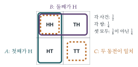

STEP III 2021, 문제 12
다음으로 넘어가기 전에 문제를 먼저 읽어 보자. 이 문제는 OCR에서 내려받을 수 있는 2021년 STEP 문제지 모음(zip 파일)의 STEP III 문제지에 있다: www.ocr.org.uk/Images/696588-2021-past-papers.zip
도입
\(1\)번 참가자와 \(2\)번 참가자가 같은 수를 굴렸다. 이 사실이 \(2\)번과 \(3\)번 참가자가 같은 수를 굴리는지에 대해 무언가를 알려 줄까? 놀랍게도 그렇지 않다. 두 사건은 서로 독립(independent)이다. \(1\)번과 \(3\)번 참가자에 대해서도 마찬가지이다. 그런데 \(1\)번이 \(2\)번과 같고 \(2\)번이 \(3\)번과 같다면, \(1\)번은 반드시 \(3\)번과 같다. 세 사건 가운데 어느 두 사건도 서로 독립이지만, 세 사건 전체는 독립이 아닌 것이다.
쌍별 독립(pairwise independence)은 완전한 독립보다 약한 조건이며, 이 차이는 중요하다. 분산(variance)을 다룰 때에는 쌍별 독립만으로 충분하고, 이 문제는 바로 이 점을 이용한다. 그러나 다른 많은 목적에는 쌍별 독립으로는 부족하다. 컴퓨터 과학자들은 일부러 쌍별 독립인 난수를 사용하기도 하는데, 완전히 독립인 난수보다 훨씬 적은 비용으로 만들 수 있으면서도 많은 알고리즘에는 그것으로 충분하기 때문이다.
시작하기 전에
\(\mathrm{P}(X_{12} = 1)\)은 얼마인가? \(\mathrm{P}(X_{12} = 1 \text{ 이고 } X_{23} = 1)\)은 얼마인가?
\(1\)번 참가자가 무엇을 굴리든, \(2\)번 참가자가 그와 같은 수를 굴릴 확률(probability)은 \(\frac16\)이다. \(X_{12} = 1\)과 \(X_{23} = 1\)이 동시에 성립한다는 것은 세 사람 모두 같은 수를 굴렸다는 뜻이므로, 그 확률은 \(\frac{6}{216} = \frac{1}{36}\)이다.
차근차근 풀기
단계 1 쌍별 독립
\(\mathrm{P}(X_{12} = 1, X_{23} = 1) = \frac{1}{36} = \frac16 \cdot \frac16 = \mathrm{P}(X_{12} = 1)\mathrm{P}(X_{23} = 1)\)이고 각 확률변수는 두 값만 가지므로, \(X_{12}\)와 \(X_{23}\)은 독립이다. (두 값만 가지는 확률변수에서는 결합 분포표(joint table)의 한 칸이 나머지 칸을 모두 결정한다. 연습문제 1에서 이를 엄밀하게 다룬다.) \(X_{12}\)와 \(X_{34}\)처럼 공통인 참가자가 없는 쌍은 당연히 독립이다. 따라서 모든 \(X_{ij}\)는 쌍별 독립이다.
단계 2 점수의 평균과 분산
점수는 \(S = \sum_{i<j}X_{ij}\)로, \(\binom n2\)개의 확률변수의 합이며, 각 확률변수의 평균(mean)은 \(\frac16\), 분산은 \(\frac16 \cdot \frac56 = \frac{5}{36}\)이다. 기댓값(expectation)은 언제나 더해지므로 \(\mathrm{E}(S) = \frac16\binom n2\)이다.
합의 분산은 언제 분산의 합과 같은가?
합의 분산은 분산의 합에 공분산(covariance)의 합의 두 배를 더한 것이고, 독립인 쌍의 공분산은 \(0\)이다. 따라서 쌍별 독립이면 충분하다. \[\mathrm{E}(S) = \frac{n(n - 1)}{12}, \qquad \mathrm{Var}(S) = \frac{5}{36}\binom n2 = \frac{5n(n - 1)}{72}.\]
단계 3 분산 공식
\(Y_i\)의 평균이 모두 \(0\)이면 \(\mathrm{Var}(\sum Y_i) = \mathrm{E}\bigl((\sum Y_i)^2\bigr)\)이고, 제곱을 전개하면 각 \(Y_i^2\)이 한 번씩, 각 곱 \(Y_iY_j\) (\(i < j\))가 두 번씩 나온다. 여기에 기댓값을 취하면 공식을 얻는다.■
단계 4 홀짝 게임
\(\mathrm{E}(Z_{12})\)는 얼마인가? \(Z_{12}Z_{23}\)은 어떤 값을 가질 수 있으며, 언제 \(0\)이 아닌가?
\(Z_{12} = 1\)일 확률은 \(\frac{3}{36} = \frac{1}{12}\)이고(둘 다 \(2\), 둘 다 \(4\), 또는 둘 다 \(6\)을 굴리는 경우), \(-1\)일 확률도 \(\frac{1}{12}\)이다. 따라서 \(\mathrm{E}(Z_{12}) = 0\)이고 \(\mathrm{E}(Z_{12}^2) = \frac16\)이다.
\(Z_{12}Z_{23} \neq 0\)인 것은 세 참가자가 모두 같은 수를 굴릴 때뿐이며, 이때 \(Z_{12} = Z_{23}\)(둘 다 \(+1\)이거나 둘 다 \(-1\))이므로 곱은 \(1\)이다. 따라서 \(\mathrm{E}(Z_{12}Z_{23}) = \frac{1}{36}\)이고, 이는 \(\mathrm{E}(Z_{12})\mathrm{E}(Z_{23}) = 0\)과 다르다. 즉 두 확률변수는 독립이 아니다.■
(더 직접적으로는, 각 사건의 확률은 \(\frac{1}{12}\)인데 \(\mathrm{P}(Z_{12} = 1, Z_{23} = -1) = 0\)이다.)
단계 5 분산
총점 \(T = \sum Z_{ij}\)의 평균은 \(0\)이다. 소문항 (ii)에 의해 \(\mathrm{Var}(T)\)는 \(\binom n2 \cdot \frac16\)에 쌍들의 쌍에 대한 \(\mathrm{E}(Z_{ij}Z_{kl})\)의 합의 두 배를 더한 것이다. 공통인 참가자가 없는 쌍들의 쌍은 \(0\)을 기여한다(서로 독립이고 각각의 평균이 \(0\)이기 때문이다). 정확히 한 명의 참가자를 공유하는 쌍들의 쌍은 각각 \(\frac{1}{36}\)을 기여하며, 그러한 쌍들의 쌍은 \(n\binom{n-1}{2}\)개 있다(공유하는 참가자를 고른 뒤 나머지 두 명을 고른다). 따라서 \[\begin{aligned} \mathrm{Var}(T) &= \frac{n(n - 1)}{12} + 2 \cdot \frac{1}{36} \cdot \frac{n(n - 1)(n - 2)}{2} \\ &= \frac{n(n - 1)}{36}\bigl(3 + (n - 2)\bigr) = \frac{n(n^2 - 1)}{36}. \qed \end{aligned}\]

돌아보기
지시변수. 점수를 지시변수(indicator variable)의 합으로 나타내자 모든 문제가 참가자 쌍에 대한 문제로 바뀌었다.
분산에는 쌍만 있으면 된다. 합의 분산은 쌍별 공분산에만 의존하므로, 분산을 더하는 데에는 쌍별 독립으로 충분하다.
독립성은 가정하지 말고 확인하라. 겉보기에 비슷한 두 게임이 서로 다른 종속 구조를 가지고 있었다.
숨은 수학
여러 사건의 독립
사건 \(A_1, \ldots, A_n\)이 독립이라는 것은, 이들 가운데 어떤 일부를 골라도 그 교집합의 확률이 각 확률의 곱과 같다는 뜻이다. 세 사건의 경우 이는 네 가지 조건, 곧 쌍에 대한 세 조건과 \(\mathrm{P}(A \cap B \cap C) = \mathrm{P}(A)\mathrm{P}(B)\mathrm{P}(C)\)를 뜻한다. 세르게이 베른시테인(Sergei Bernstein)은 1920년대에 그림 12.4.1의 예를 들어 쌍별 조건이 세 사건에 대한 조건을 함의하지 않음을 보였다. (거꾸로, 세 사건에 대한 조건만으로는 쌍별 조건도 함의되지 않는다.) 문제의 일치 사건 \(X_{12}\), \(X_{23}\), \(X_{13}\)은 베른시테인의 동전과 정확히 같은 구조이다.
상관없음은 독립이 아니다
공분산이 \(0\)이라는 것, 곧 \(\mathrm{E}(XY) = \mathrm{E}(X)\mathrm{E}(Y)\)는 독립보다 더욱 약한 조건이다. STEP III 2000 Q14(연습문제에 있다)는 두 값만 가지는 확률변수에서는 두 개념이 일치하지만, 세 값을 가지면 그렇지 않음을 보여 준다. 간단한 예를 들어 보자. \(X\)가 \(\{-1, 0, 1\}\) 위의 균등분포를 따르고 \(Y = X^2\)이라 하자. 그러면 \(\mathrm{E}(XY) = \mathrm{E}(X^3) = 0 = \mathrm{E}(X)\mathrm{E}(Y)\)이지만, \(Y\)는 \(X\)에 의해 완전히 결정된다. 공분산은 선형적인 관계만을 측정한다.
컴퓨터가 난수를 만드는 데에는 많은 비용이 든다. 1979년 Larry Carter와 Mark Wegman은 데이터를 유사 무작위 위치에 저장하는 해싱(hashing)을 비롯한 많은 알고리즘에서, 쌍별 독립인 무작위 선택이 완전히 독립인 선택만큼이나 좋다는 것을 보였다. 쌍별 독립인 값은 매우 적은 비용으로 만들 수 있다. 예를 들어 \(a\)와 \(b\)를 무작위로 고르고 \(k = 0, 1, \ldots, p - 1\)에 대해 \(a + bk \pmod p\)를 계산하면, 어느 두 값도 서로 독립인 \(p\)개의 값을 얻는다. 이것이 잘 작동하는 이유가 바로 이 문제의 분산 계산이다. 체비쇼프 부등식(Chebyshev’s inequality)에는 분산만 필요하고, 분산에는 쌍만 필요하다.
사고 기술
어떤 개수의 평균과 분산을 구하려면, 셀 수 있는 대상마다 하나씩 지시변수를 두어 그 개수를 지시변수의 합으로 나타내라. 평균에는 지시변수 하나하나가 필요하고, 분산에는 쌍이 필요하다.
이것은 확률론에서 가장 유용한 기법 가운데 하나이며, 이미 9.8 절에서도 등장했다. 대학에서는 무작위 그래프, 알고리즘, 통계적 검정의 분석에서 핵심 도구로 쓰인다.
더 도전하기
두 값. STEP III 2000, 문제 14에 도전해 보라. 이 문제는 각각 두 값만 가지는 확률변수에서는 \(\mathrm{E}(XY) = \mathrm{E}(X)\mathrm{E}(Y)\)이면 반드시 독립임을 보이고, 세 값을 가지는 경우의 반례를 요구한다.
더 큰 팀. 소문항 (i)에서 \(n = 7\)일 때 점수의 평균과 표준편차(standard deviation)를 구하고, 예시로 나온 점수 \(7\)과 비교하라.
다시 생일 문제. 지시변수를 이용하여 \(k\)명 가운데 생일이 같은 쌍의 개수의 평균과 분산을 구하라(9.9 절). 이 지시변수들은 쌍별 독립인가?
세 사건 조건은 성립하지만 쌍별 독립은 아닌 경우. 확률이 각각 \(\frac12\)이고 \(\mathrm{P}(A \cap B \cap C) = \frac18\)이지만 쌍별 독립은 아닌 세 사건을 찾아라.
더 읽을거리
Geoffrey Grimmett & David Stirzaker, Probability and Random Processes (Oxford University Press). 독립성을 다루는 앞부분의 장들.
Michael Mitzenmacher & Eli Upfal, Probability and Computing (Cambridge University Press). 쌍별 독립과 그 알고리즘에서의 활용.
Joseph Blitzstein & Jessica Hwang, Introduction to Probability (CRC Press, 온라인 무료 공개). 지시변수와 공분산에 관한 내용.